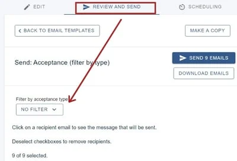
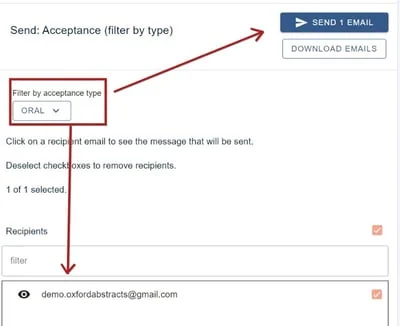

Notifying submitters of their outcomes
For event organisersNot an organiser?
When you and your committee have made your decisions, you can then notify your submitters#
NB: Before you read this article, it is advised that you are familiar with Amending email templates and Sending and scheduling emails
Go to Event dashboard → Emails → Edit and send → Abstract Management
You will see a list of template emails (listed under Automatic and Manual) for the event.
Scroll to the Manual section.
You can choose to send an email to all accepted submissions, or one that will populate the relevant merge fields according to the type of acceptance - eg. accepted for poster, rejected etc.
Click on the type of email you wish to view/amend, and make the required changes to the body of the email and add the relevant merge fields.
If you choose the second option, when you click Review and send, you can choose to Filter

Once you have selected your filter, the list of emails with this acceptance type will appear in the section below, along with the amount on the blue Send button. You can choose to check how the message will look to that recipient by clicking on the email, or go ahead and click the blue Send button.

You can then go back and amend the email for the next acceptance type, and repeat the process.
Did this page solve it?
Thanks — this helps us fix it.
Didn't solve it? Ask our support team
No question is too small, and there's no charge for asking. Raise a ticket and someone who knows the software will pick it up.